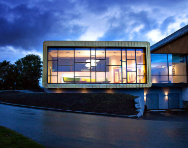
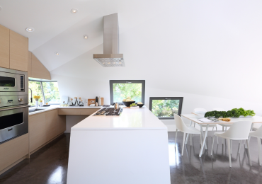
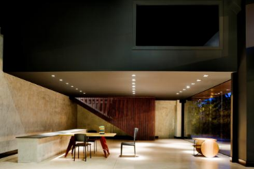

Most popular posts

Vanglo House By LWPAC in Canada

Sunrise Expanse Hotel in USA
- 
Stargaze Resort & Spa in USA
- 
Royal Blossom Hotel & Spa in USA
- 
Sunset Shack Hotel in Spain

Glorious Expanse Hotel in France
our most popular clients


Top rated


 (1).png)
.png)

hot news
-

Prophecy Hotel & Spa in Emirate
Amazing Gabion Ideas for Outdoors A Gabion is a cage box or cylinder filled with rocks, concrete, or sometimes sand and soil and It is a great way to decorate your outdoor. Amazing Gabion Ideas for Outdoors A Gabion is a cage box or cylinder filled with rocks, concrete, or sometimes sand and soil and It is a great way to decorate your outdoor
-

Nebula Hotel in Spain
-

Western Pyramid Resort in Egypt
Amazing Gabion Ideas for Outdoors A Gabion is a cage box or cylinder filled with rocks, concrete, or sometimes sand and soil and It is a great way to decorate your outdoor. Amazing Gabion Ideas for Outdoors A Gabion is a cage box or cylinder filled with rocks, concrete, or sometimes sand and soil and It is a great way to decorate your outdoor
-

Grand Meadows Resort in Maldives
Amazing Gabion Ideas for Outdoors A Gabion is a cage box or cylinder filled with rocks, concrete, or sometimes sand and soil and It is a great way to decorate your outdoor. Amazing Gabion Ideas for Outdoors A Gabion is a cage box or cylinder filled with rocks, concrete, or sometimes sand and soil and It is a great way to decorate your outdoor
-

Wanderlust Resort in Tenerife
Amazing Gabion Ideas for Outdoors A Gabion is a cage box or cylinder filled with rocks, concrete, or sometimes sand and soil and It is a great way to decorate your outdoor. Amazing Gabion Ideas for Outdoors A Gabion is a cage box or cylinder filled with rocks, concrete, or sometimes sand and soil and It is a great way to decorate your outdoor
-

Twin Sanctuary Hotel in Great Britain
Amazing Gabion Ideas for Outdoors A Gabion is a cage box or cylinder filled with rocks, concrete, or sometimes sand and soil and It is a great way to decorate your outdoor. Amazing Gabion Ideas for Outdoors A Gabion is a cage box or cylinder filled with rocks, concrete, or sometimes sand and soil and It is a great way to decorate your outdoor
-

Prism Hotel in Ireland
-

King's Shroud Resort in Spain
Amazing Gabion Ideas for Outdoors A Gabion is a cage box or cylinder filled with rocks, concrete, or sometimes sand and soil and It is a great way to decorate your outdoor. Amazing Gabion Ideas for Outdoors A Gabion is a cage box or cylinder filled with rocks, concrete, or sometimes sand and soil and It is a great way to decorate your outdoor